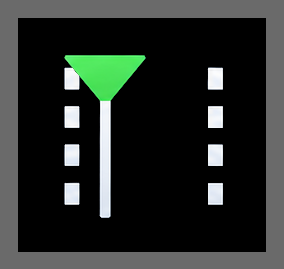
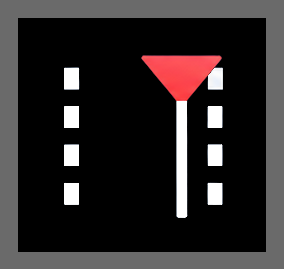
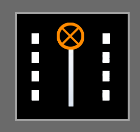
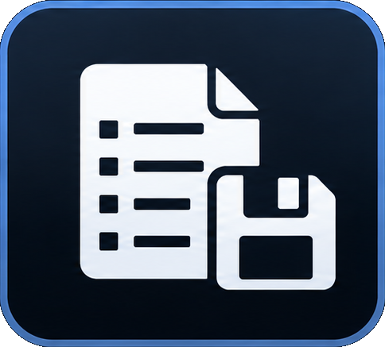

Film bearbeiten Edit a film
Grundfunktionen Basic steps
Vorschau. Den Eintrag anklicken. Der Film öffnet sich rechts, gelb umrandet in der Liste. Preview. Click the row. The film opens on the right and the row gets a yellow border.
Autoplay. Nach dem Film startet der nächste von selbst. Autoplay. When the film ends, the next one starts on its own.
Loop. Der Film wiederholt sich, bis Weiter gedrückt wird. Loop. The film repeats until Resume is pressed.
Sicherheit. Vor dem Start kommt eine Warnung, wenn der Beamer für diesen Film umschalten muss. Safety. A warning appears before the film if the projector must change mode.
Dimmer. Lichtszene beim Start, zwischen Sicherheit und gespielt. Dunkel ist der Standard. Dimmer. Light scene at the start, between Safety and played. Dark is the default.
In

und Out
. An der Spielposition setzen. Der Film beginnt bei In und endet bei Out. I und O gehen auch von der Tastatur. In and Out . Set them at the playhead. The film starts at In and ends at Out. I and O work from the keyboard too.Dimmpunkt

. Neben In und Out, mit der Lichtszene daneben. Ohne In oder Out gilt der Rest der Datei. Sind beide gesetzt, liegt der Punkt dazwischen. Dim point . Next to In and Out, with the light scene beside it. Without In or Out, the rest of the file is the range. With both, the point sits between them.Speichern

. Die Punkte und Schalter gehören zur Playlist. Save . The marks and switches belong to the playlist.